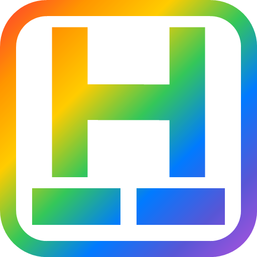
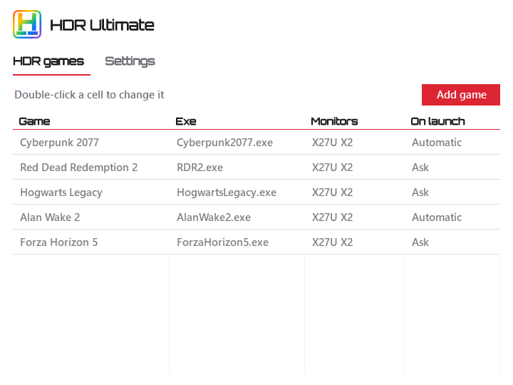
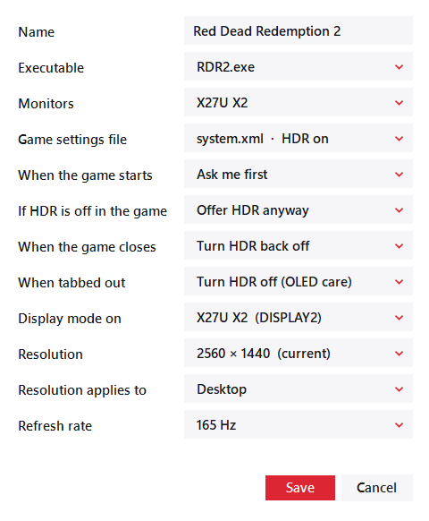
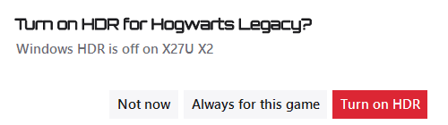

Per-monitor hotkeys
Toggle HDR on any one monitor, or a group of them, with a key combination or a click on the tray icon. The icon shows which monitors are on.

Per-monitor HDR control from your system tray. HDR turns on when your game starts and off when it closes.
Latest version · Windows 10 and 11 · Free and open source

Toggle HDR on any one monitor, or a group of them, with a key combination or a click on the tray icon. The icon shows which monitors are on.
Add a game and HDR comes on when it starts, then goes back off when it closes. Have it ask first, or just do it. It reads the game's own HDR setting too.
Tab out of a game and HDR switches off after a delay you choose, then comes back the moment you return. Less static brightness on screens that can burn in.
Give a game its own resolution and refresh rate. Apply the resolution to the desktop while it runs, or write it into the game's settings.
One small file, no installer and no background services. Light and dark themes that follow your system.
Built for Windows 10 and 11. A Linux version for KDE Plasma 6 and GNOME 48+ is in preview.

Pick the game's exe and its monitors. HDR Ultimate finds the game's settings file on its own and works out the rest.

When a game asks first, a small prompt appears in the corner without taking focus from the game.
HDRUltimate.exe and run it. There's nothing to install.Needs a monitor that supports HDR.
tar xzf HDRUltimate-Linux.tar.gz
cd HDRUltimate-Linux
sh install.shNeeds Wayland with KDE Plasma 6 or GNOME 48+, and Python 3.9 or newer.
Privacy: HDR Ultimate checks in once a day, only to count how many people use it. Nothing about you, your PC, your games or your settings is sent, and you can opt out on first launch or any time in Settings.
HDR Ultimate is free and open source. If it's useful to you, donations are appreciated but never expected.
bc1qeaxzwgxluv7cqd0vycfvev2djm233m8nk9f7yx0xBFB1fac92565B9B2A995D8bAb9B677fE8d9AB94FrKXSrHt2i6n4qPqgkQwWMhJVhW9A9PDX6RCrypto transactions can't be reversed. Double-check the address and the network before you send.